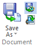

Save Translation to Teamcenter option
Determines whether Save As Translated commands save your document to Teamcenter (managed) or to disk (unmanaged). Select to save the translation to Teamcenter, deselect to save to disk.

This option and the Save Translation to Teamcenter option in Solid Edge Options→Manage page→General tab are synchronized.
Note:
Administrators can define the Teamcenter preference, SEEC_Save_Translation to determine the behavior for managing translated files.